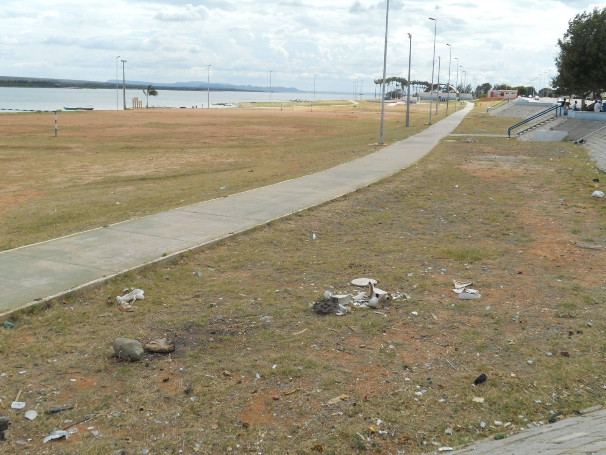

Orla Fluvial
Há muito lixo na Orla Fluvial devido à falta de infraestrutura de saneamento e gestão inadequada de resíduos.
Terra Nova é um grupo focado em combater o acúmulo de lixo. Ela oferece serviços de reciclagem e compostagem com technologia, além de promover a educação sobre práticas sustentáveis. Utiliza tecnologia para melhorar a gestão de resíduos e reduzir o impacto ambiental expandindo suas soluções para um futuro mais limpo e sustentável.
Terra Nova